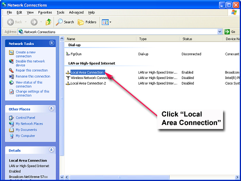
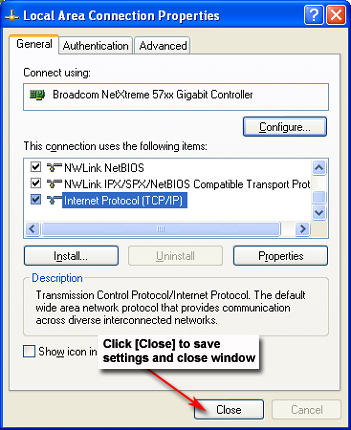
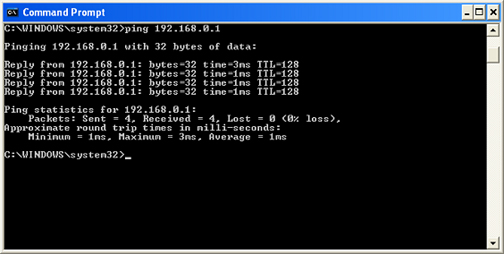

Operating Documentation
Direction 5133315-3, Rev# 14
Signa EXCITE HD 1.5T Service Methods
Module Version 3.0, Version Date 10/26/10
Operating Documentation |
This procedure is used to log into Magmon from the Service Browser on the customer's scanner, or from a laptop attached to the customer's network.
Magmon3 was previously configured for network operation using a direct connection between this device and a laptop.
Magmon3 has been successfully communicating over the building network.
Magmon3 is connected to the building network via Magmon3 – J5 port.
Find the IP address assigned to the Magmon3 by pressing Data, then Up repeatedly until the IP Address displays.
Write down the IP Address for use later.
Press Service Mode repeatedly until the display shows Start Web Mode? (Yes/No) Same IP. Press Yes to activate Web Mode.
Connect the laptop to the building network using a CAT5-type network cable.
Open a web browser session on the laptop.
Type the Magmon3's IP address (recorded
earlier) into the laptop browser's address bar, and click  (Go). The browser should display the Magmon3 Service Login screen.
(Go). The browser should display the Magmon3 Service Login screen.
Go to Login Modes for further instructions.
Use this procedure for these conditions:
First-time setup of the Magmon3.
Laptop connected directly to Magmon3 – J5 port using a crossover CAT5-type network cable.
Right-click on  (My Network Places) on the laptop's desktop.
(My Network Places) on the laptop's desktop.
Select Properties from the menu. The Network Connections window (Illustration 1) will open.
Illustration 1: Network Connections Window

Disable the wireless network connection (if enabled). Right-click on Wireless Network Connection, and select [Disable].
Double-click Local Area Connection. The Local Area Connection Status window (Illustration 2) will open.
Illustration 2: Local Area Connection Status Window

| NOTE: | Depending on the laptop's configuration, the Local Area Connection Properties window (Illustration 3) may be display. In this case, skip to Step 6. |
Click [Properties] to open the Local Area Connection Properties window shown below.
Select Internet Protocol (TCP/IP), and click [Properties]. The Internet Protocol Properties window (Illustration 4) will open.
Illustration 3: Local Area Connection Properties Window

Click Use the following IP address on the Internet Protocol (TCP/IP) Properties window.
Illustration 4: Internet Protocol (TCP/IP) Properties Window

Enter the following addresses as shown in Illustration 4:
Type 192.168.0.2 in the IP address box.
Type 255.255.0.0 in the Subnet mask box.
Click [OK] to save settings and exit.
Click [OK] or [Close] to save the new Local Area Connection Properties (Illustration 5). This may take a moment. Make sure to close the Local Area Connection Status window.
Illustration 5: Local Area Connection Properties Window

Launch Internet Explorer from the laptop's desktop.
In Internet Explorer, select Tools → Internet Options as shown below.
Illustration 6: Internet Explorer Menu Selections

In the Internet Options window, click the Connections tab.
Illustration 7: Internet Options Window

Click [LAN Settings] on the Internet Options window.
Illustration 8: Internet Options Connection Tab

When the Local Area Network (LAN) Settings window opens, make sure the Automatically detect settings and Use automatic configuration script boxes are not selected.
Illustration 9: Local Area Network (LAN) Settings Window

Click [OK] to save the LAN Settings. Click [OK] to save all settings and close the Internet Options window.
Illustration 10: Internet Options Window

On the laptop, open a Command Prompt window. In Windows XP, click the (c:\) icon in the taskbar. (Another option is to go to Start → Programs → Accessories → Command Prompt.)
Type ping 192.168.0.1<Enter>. If the Magmon3 unit responds (Illustration 11), close the Command Prompt window, and proceed to the next step. If not, recheck your settings.
Illustration 11: Command Prompt Window

Return to Internet Explorer and enter
the Magmon3's IP address (192.168.0.1) in the
address field. Click (Go). The browser should display
the Magmon3 Service Login screen.
Illustration 12: Magmon3 Service Login Screen

Go to Login Modes for further instructions.